Wajima, Ishikawa: things to do, food and stays
Wajima · Ishikawa
Wajima
Highlighted on the Ishikawa map.
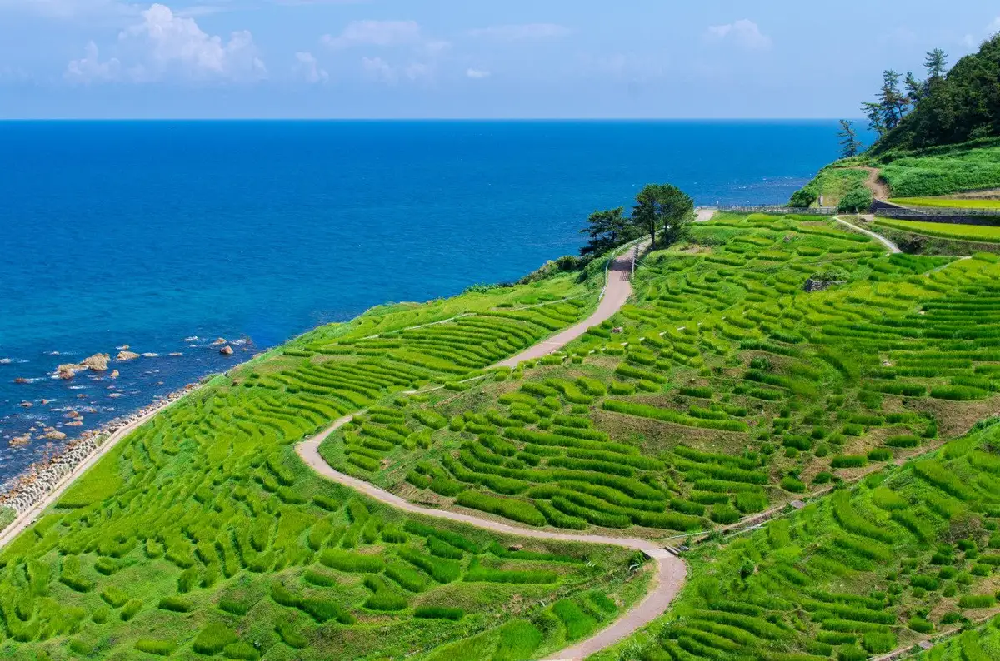
Stay
輪島天然温泉「旅人の湯」 ホテルルートイン輪島
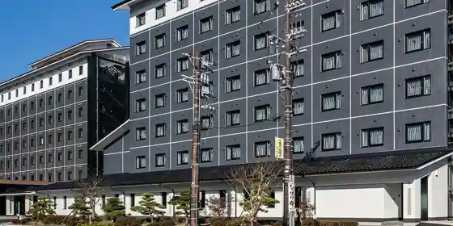
Wa Shima Tennen Onsen (Tabibito No Yu) Hotel Route Inn Wa Shima
Hotel at Washimatennen Onsen in Marintaun, Wajima with a large communal bath.
輪島天然温泉 ホテルルートイン輪島
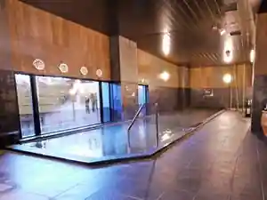
Wa Shima Tennen Onsen Hotel Route Inn Wa Shima
Hotel at Washimatennen Onsen in Marintaun, Wajima.
Trip inn 能登空港
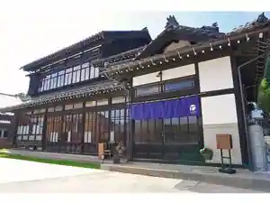
Trip inn Noto Kuko
Inn in Mitsui, Wajima with a renovated traditional house.
ゲストハウス黒島
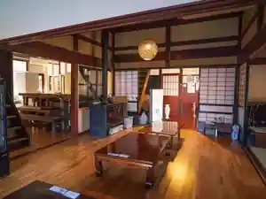
Guesthouse Kuro Shima
Guesthouse in Monzen, Wajima with a renovated traditional house.
Dining
アユート
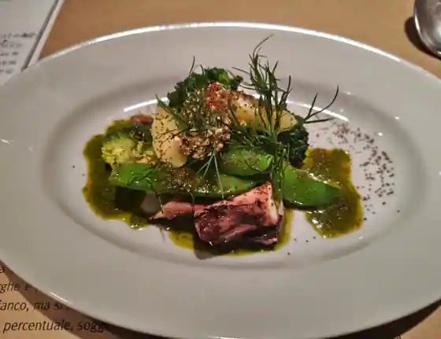
Ayuto
寿司処 伸福
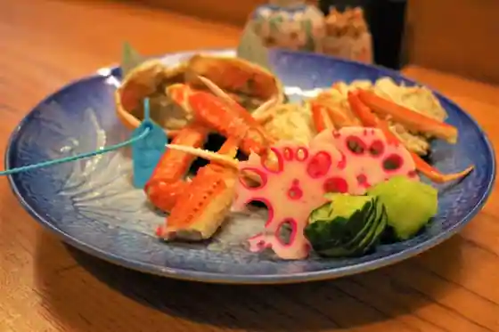
Sushi Tokoro Shin Fuku
やぶ新橋店
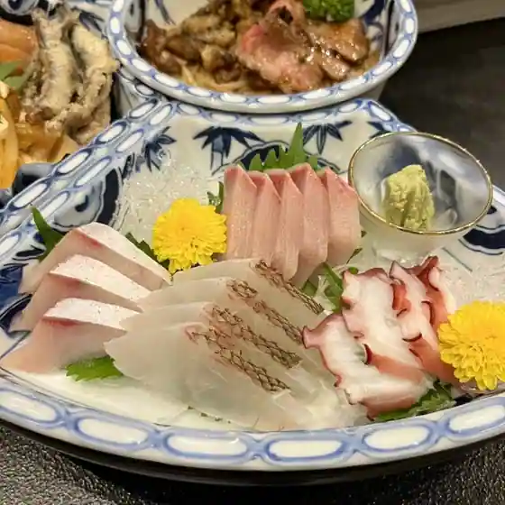
Yabu Shinbashi
芽吹
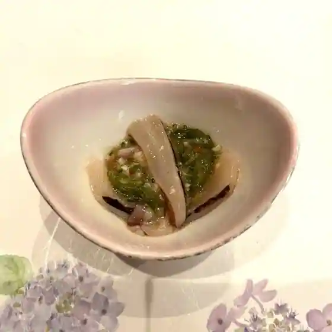
Me Sui
道の駅 千枚田ポケットパーク
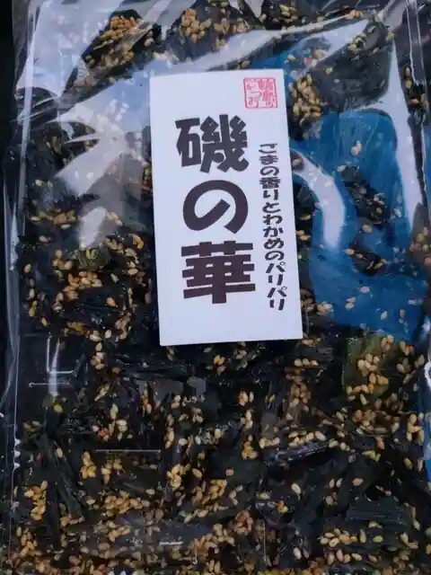
Michi No Eki Senmaida Poketto Park
レストラン あんのん
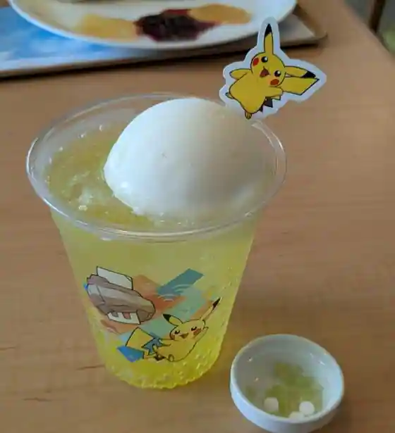
Restaurant Annon
能登 手仕事屋
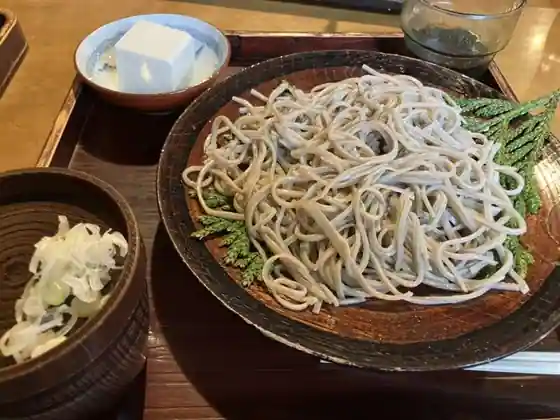
Noto Teshigoto Ya
オリゾンテ
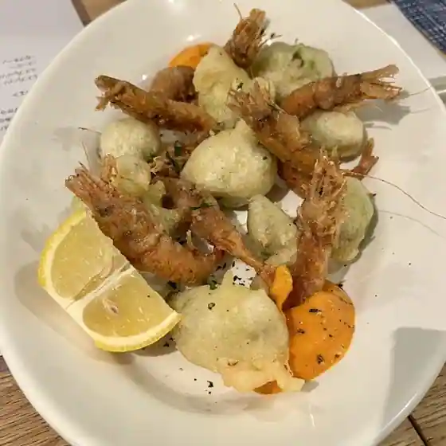
Orizonte
ラ・レーヴ
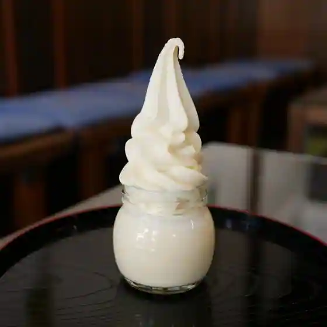
Ra Revu
蕎麦処 やぶかぶれ
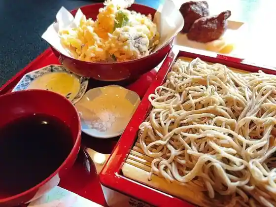
Sobadokoro Yabukabure
お宿たなか
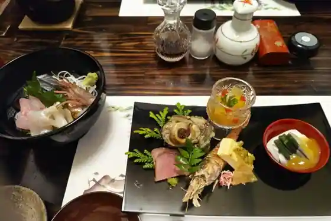
O Yadota Naka
藤田総本店
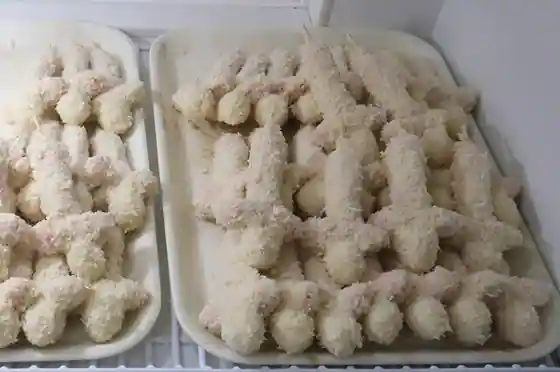
Fujita So Hon
夥汲
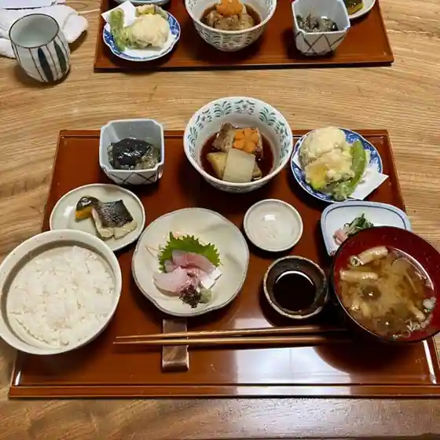
Ka Kyu
ホテルこうしゅうえん
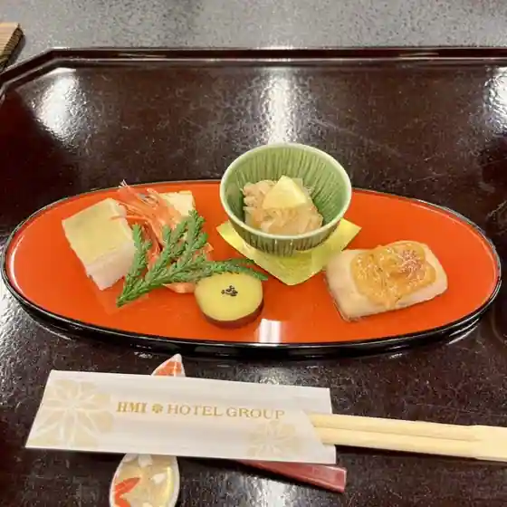
Hotel Koshuen
中華そば いぶき
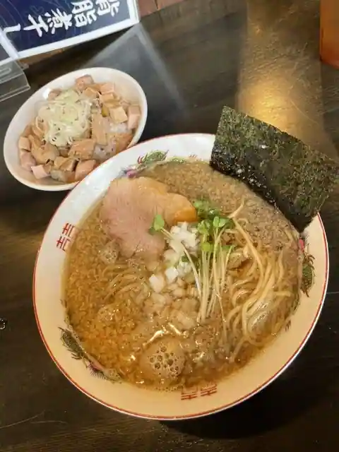
Chuka Soba Ibuki
津志万
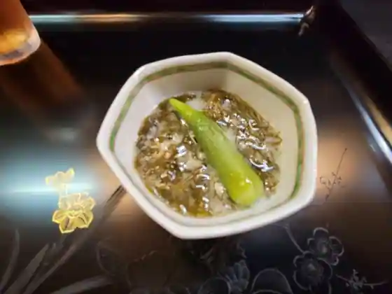
Tsu Kokorozashi Man
千枚田珈琲
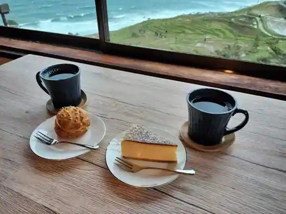
Senmaida Coffee
輪島網元 とね
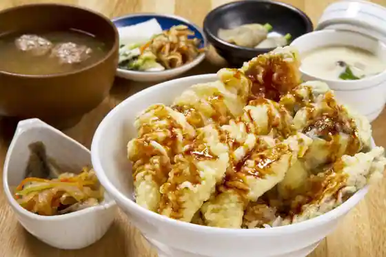
Wa Shima Amimoto Tone
ラポール デュ パン
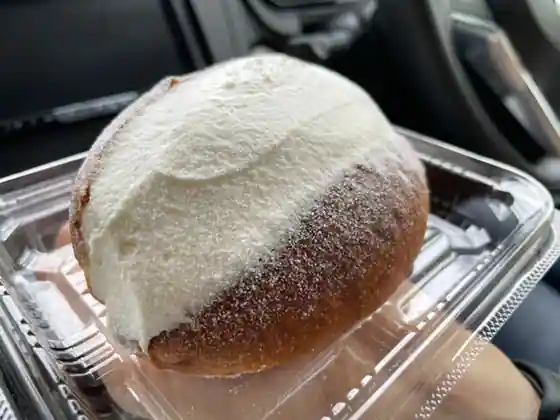
Raporu Deyu Bakery
深三
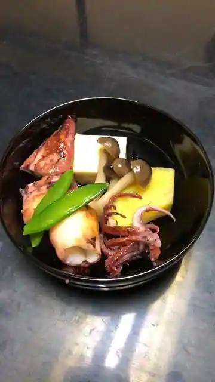
Shin San
阿づま寿し
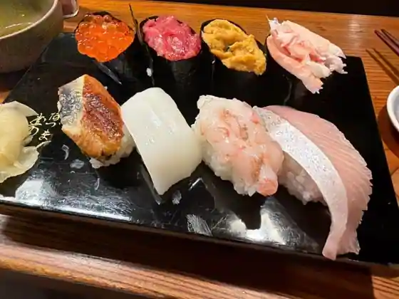
A Zuma Hisashi Shi
道の駅 赤神
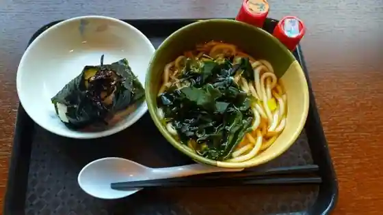
Michi No Eki Akagami
海辺の杣径
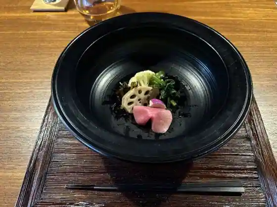
Umibe No Somamichi
ゼロイチ×萬正食堂
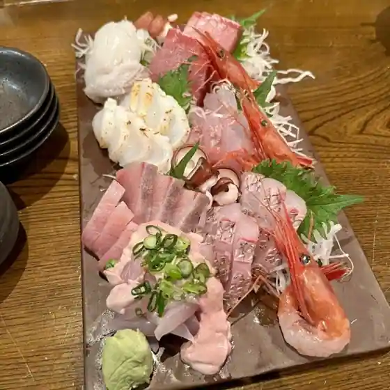
Zeroichi X Man Sei Shokudo
Sights
Hakumai Senmaida
Shutcho Wajima Asa City in Wai Plaza Wajima Mise
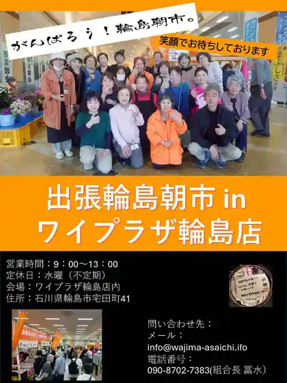
Hegura Shima
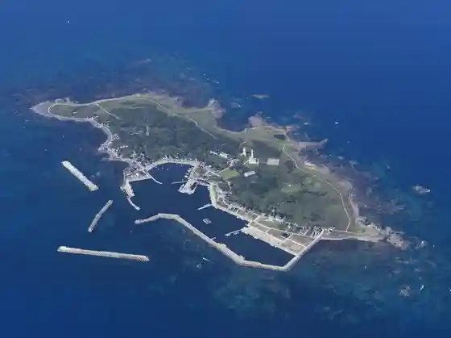
Roadside Station Wajima (Furatto Ho Yume)
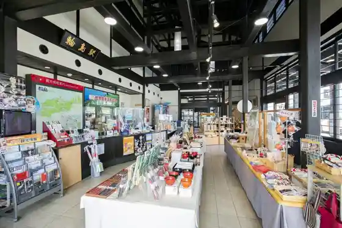
Roadside Station Senmaida Pogatto Park Shumatsu Eigyochu
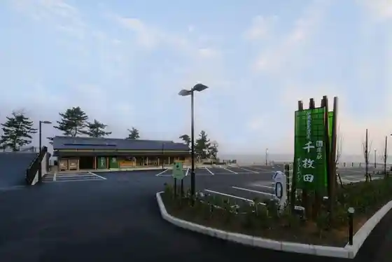
O Jinjo Taiko (Mei Fune Town)
Omoto Yama Sojidera So In
no to Satoyama Airport
Roadside Station Akagami
Wajima Tenryo Kuro Shima Chiku
Kongahama (Naki Suna no Hama)
Wajima Workshop Nagaya
Nami no Hana
Wajima Kiriko Hall Reiwa 6 Nen (2024 Nen) Noto Han Shima Jishin no Eikyo Niyori Tomen no Kan Rinji Kyukanchu
Tarumi Falls
So So Ki Coast
Kan Kaki no Sato Osawa Ue Osawa
Wajima Nuri Hall 1F no Mi Eigyochu
Nebuta Onsen Umi Yu Noto no Sho Reiwa 6 Nen (2024 Nen) Noto Han Shima Jishin no Eikyo Niyori Tomen no Kan Kyukanchu
Kamogaura Sanpomichi
Noto Monzen Famiriiin Byu Sansetto
Ishikawaken Wajima Shitsugei Art Museum
Wajima Nuri
Wajima Mabushi Oyasu Shikki Workshop
Monzen Motasupotsu Park
Sodegahama Campground (GW Kaki no Mi) Reiwa 6 Nen (2024 Nen) Noto Han Shima Jishin no Eikyo Niyori Tomen no Kan Rinji Kyugyochu
Umi no Eki Roku Mei Kan
Fukugaana
Mina Gatsu Seishonen Ryoko Village
Agishi Hon Sei Tera (Agishikogikuzakura) Reiwa 6 Nen Noto Han Shima Jishin no Eikyo De Haikanteishi Naka
Seppuntonneru
Wajima Fugu
no to Kiriopun Garden 2026
Wajima Kirimoto
Saruyama Misaki Lighthouse (Yukiwari Kusa Gunsei Chi)
Wajima Ekorojii Campground (4/1 10/31) Reiwa 6 Nen (2024 Nen) Noto Han Shima Jishin Hisai no Tame, Tomen no Kan Heisa Toshiteimasu
Oke Taki
Ashiyu Yu Raku Sato
Mina Gatsu Coast
Noto no Ryojo Ho Center
Ipponmatsu Sogo Sports Park
Kyu Kaku Umi Ie House
Horai Yama Park
Kowa Shusui (Kowashudo)
Shippi no Sho Zen no Sato Koryu Kan
Soto Shu Hasu Ko Tera
Shigezo Shrine
Nishi Yoshi Tera Yamamomiji
Iwakura Tera
Danjo Taki
Wajima Culture Hall
Kuro Shima Tenryo Kitamae Fune Museum
Sen Karada Jizo
Shingonshu Kinzo Tera
Minami So Art Museum
Ate no Ganso
Wajima Furusato Taiken Jisshu Kan
Ishikawaken Kenko Forest
Shingonshu Tennoji (Shakunage Tera)
Wajima Marintaun Kyogijo
Shokuji Tokoro Asa City Sakaba
Nishibo Coast
O Shokuji Tokoro Yabu Shimbashi Mise
Omoto Yama Sojidera So In Zazen Experience
Iwakura Yama
So So Ki Tourism Association (Furusato Taiken Jisshu Kan)
Yorimichi Pakingu (Danjo Taki)
Takahama Kyoshi Kuhi
Wajima Workshop Nagaya Sakamoto Shikki Mise
Shitsu Amyuzumento Nuri Taro Reiwa 6 Nen (2024 Nen) Noto Han Shima Jishin no Eikyo Niyori Tomen no Kan Kyugyochu
Sumiyoshi Shrine
Wajima Mae Shrine
Noto (Kibo no Akari)
Agishikogikuzakura (Agishi Hon Sei Tera) Reiwa 6 Nen Noto Han Shima Jishin no Eikyo De Haikanteishi Naka
Sakura Taki (Wajima Monzen Town Fukami)
Hasebe Shinren no Haka
Yuzu Beshi So Honke Nakaura Ya
Shokunin Gyararii Chumon (Chumon Shikki Mise)
San Hebi Yama no Mizubasho
Ishikawaken Wajima Suiei Puru (Wajima Machino Suiei Puru)
Wajima Shikki Taiga Do Tenjijo
Hakusan Shrine no Sekizo Goju to (Chudan Town)
Wajima Machino Getoboru Ba
Wajima Yakusho